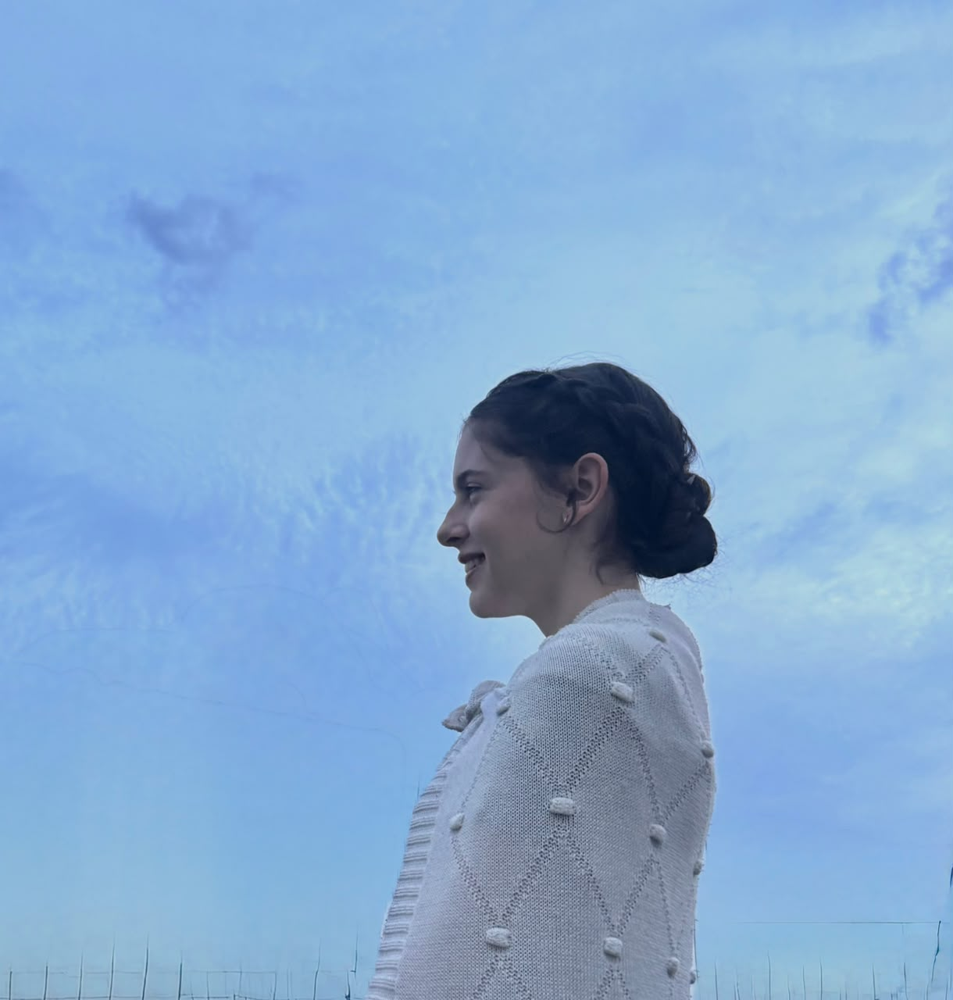

Quem Sou
Desde que me entendo por gente, estou envolvida com tintas, pincéis, lápis e papéis. Quase como se fosse uma extensão de mim mesma, a arte sempre esteve presente em minha vida, seja através de desenhos, pinturas ou os rabiscos que eu fazia nas paredes quando era criança.
A pintura a óleo tornou-se um refúgio para minha alma nos útlimos meses e decidi me dedicar a ela com mais intensidade.
Além da pintura, gosto de restaurar objetos antigos, modelar esculturas em argila e colecionar pequenos elementos da natureza, como folhas, galhos e pedras, que muitas vezes acabam servindo de inspiração para novas criações.
Espero que cada obra apresentada aqui desperte sentimentos bons em você, esse é o meu objetivo como artista, transmitir boas sensações através da minha arte.